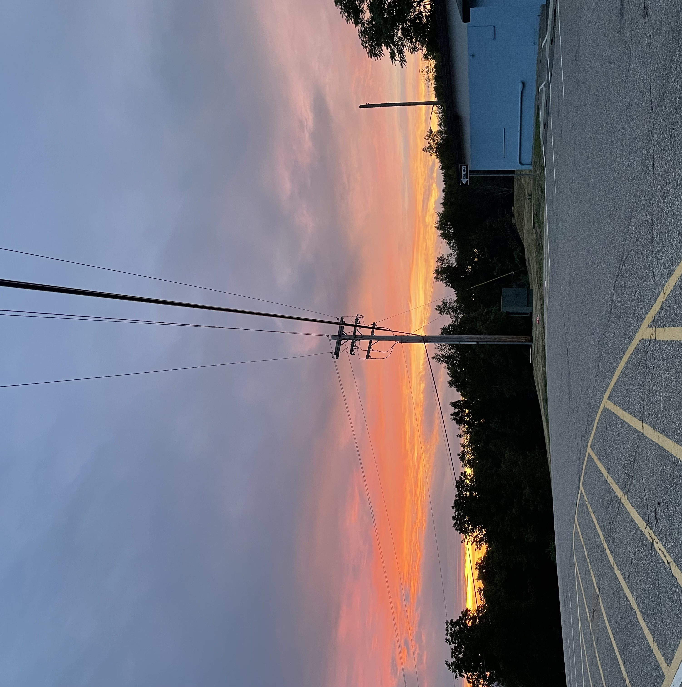

What is dwight?

Dwight is a website filled with tools that can help imrprove your mental health.
The site is intentionally designed with calming features, making it a safe place to turn to in moments of distress.
Exploring the site in a calm headspace is reccommended to create a concrete plan for ways to utilize the site when struggling.
How to use this site
- Skills: learn about skills organized by the four modules of DBT (with additional techniques from other modalities)
- Practice: try out some skills right here on the site
- Community: share and discover helpful resources (playlists, poems, etc.) with community members
- Crisis: this page is here to help support you through moments of high distress.